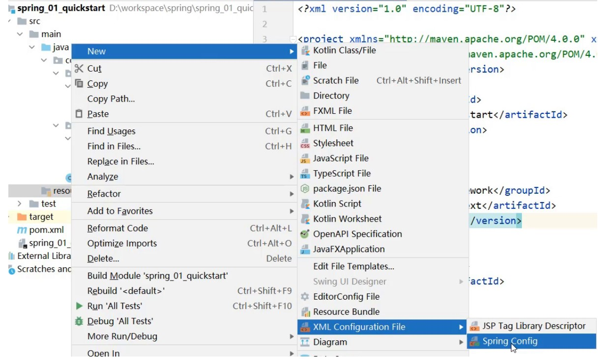

2. Ioc基础入门¶
IOC入门案例¶
重要
思路分析
(1)Spring是使用容器来管理bean对象的，管什么?
主要管理项目中所使用到的类对象，比如(Service和Dao)
(2)如何将被管理的对象告知IOC容器?
使用配置文件
(3)被管理的对象交给IOC容器，要想从容器中获取对象，就先得思考如何获取到IOC容器?
Spring框架提供相应的接口
(4)IOC容器得到后，如何从容器中获取bean?
调用Spring框架提供对应接口中的方法
(5)使用Spring导入哪些坐标?
用别人的东西，就需要在pom.xml添加对应的依赖
注解
需求分析:将BookServiceImpl和BookDaoImpl交给Spring管理，并从容器中获取对应的bean对象进行方法调用。
1.创建Maven的java项目
2.pom.xml添加Spring的依赖jar包
<dependencies> <dependency> <groupId>org.springframework</groupId> <artifactId>spring-context</artifactId> <version>5.2.10.RELEASE</version> </dependency> <dependency> <groupId>junit</groupId> <artifactId>junit</artifactId> <version>4.12</version> <scope>test</scope> </dependency> </dependencies>
3.创建BookService,BookServiceImpl，BookDao和BookDaoImpl四个类
public interface BookDao { public void save(); } public class BookDaoImpl implements BookDao { @Override public void save() { System.out.println("book dao save ..."); } } public interface BookService { public void save(); } public class BookServiceImpl implements BookService { private BookDao bookDao = new BookDaoImpl(); @Override public void save() { System.out.println("book service save ..."); bookDao.save(); } }
4.resources下添加spring配置文件(applicationContext.xml)，并完成bean的配置
<?xml version="1.0" encoding="UTF-8"?> <beans xmlns="http://www.springframework.org/schema/beans" xmlns:xsi="http://www.w3.org/2001/XMLSchema-instance" xsi:schemaLocation="http://www.springframework.org/schema/beans http://www.springframework.org/schema/beans/spring-beans.xsd"> <!--bean标签标示配置bean id属性标示给bean起名字 class属性表示给bean定义类型 --> <bean id="bookDao" class="com.linzzz.dao.impl.BookDaoImpl"/> <bean id="bookService" class="com.linzzz.service.impl.BookServiceImpl"/> </beans>注意事项：bean定义时id属性在同一个上下文中(配置文件)不能重复
5.使用Spring提供的接口完成IOC容器的创建
ApplicationContext ctx = new ClassPathXmlApplicationContext("applicationContext.xml");
6.从容器中获取对象进行方法调用
public class App { public static void main(String[] args) { //获取IOC容器 ApplicationContext ctx = new ClassPathXmlApplicationContext("applicationContext.xml"); // BookDao bookDao = (BookDao) ctx.getBean("bookDao"); // bookDao.save(); BookService bookService = (BookService) ctx.getBean("bookService"); bookService.save(); } }
IOC相关内容¶
bean基础配置¶

bean的name属性¶

配置别名
<!--name:为bean指定别名，别名可以有多个，使用逗号，分号，空格进行分隔--> <bean id="bookService" name="service service4 bookEbi" class="com.linzzz.service.impl.BookServiceImpl"> <property name="bookDao" ref="bookDao"/> </bean> <!--scope：为bean设置作用范围，可选值为单例singloton，非单例prototype--> <bean id="bookDao" name="dao" class="com.linzzz.dao.impl.BookDaoImpl"/>
根据名称容器中获取bean对象
public class AppForName { public static void main(String[] args) { ApplicationContext ctx = new ClassPathXmlApplicationContext("applicationContext.xml"); //此处根据bean标签的id属性和name属性的任意一个值来获取bean对象 BookService bookService = (BookService) ctx.getBean("service4"); bookService.save(); } }
注意
bean依赖注入的ref属性指定bean,必须在容器中存在,不存在则会报错 NoSuchBeanDefinitionException
bean作用范围scope配置¶

单例/非单例
默认情况下，Spring创建的bean对象都是单例的
通过配置scope属性来实现bean的非单例创建
在Spring的配置文件中，修改
<bean>的scope属性
<bean id="bookDao" name="dao" class="com.linzzz.dao.impl.BookDaoImpl" scope=""/>
将scope设置为
prototype
<bean id="bookDao" name="dao" class="com.linzzz.dao.impl.BookDaoImpl" scope="prototype"/>
结论，使用bean的
scope属性可以控制bean的创建是否为单例：singleton默认为单例prototype为非单例
注解
为什么bean默认为单例?
bean为单例是在Spring的IOC容器中只会有该类的一个对象，避免了对象的频繁创建与销毁，达到了bean对象的复用，性能高
bean在容器中是单例的，会不会产生线程安全问题?
如果对象是有状态对象，即该对象有成员变量可以用来存储数据的，因为所有请求线程共用一个bean对象，所以会存在线程安全问题。
如果对象是无状态对象，即该对象没有成员变量没有进行数据存储的，因方法中的局部变量在方法调用完成后会被销毁，所以不会存在线程安全问题。
哪些bean对象适合交给容器进行管理?
表现层对象
业务层对象
数据层对象
工具对象
哪些bean对象不适合交给容器进行管理?
封装实例的域对象，因为会引发线程安全问题，所以不适合。
bean基础配置小结¶
<bean
id="bean的唯一标识"
class="bean的类全名"
scope="bean的作用范围，有singleton(默认)和prototype"
name="bean起的别名"
/>
bean实例化¶
bean本质上就是对象，对象在new的时候会使用构造方法完成，创建bean也是使用构造方法完成的。
构造方法实例化¶
准备需要被创建的类
public interface BookDao { public void save(); } public class BookDaoImpl implements BookDao { @Override public void save() { System.out.println("book dao save ..."); } }
将类配置到Spring容器
<bean id="bookDao" class="com.linzzz.dao.impl.BookDaoImpl"/>
编写运行程序
public class AppForInstanceBook { public static void main(String[] args) { ApplicationContext ctx = new ClassPathXmlApplicationContext("applicationContext.xml"); BookDao bookDao = (BookDao) ctx.getBean("bookDao"); bookDao.save(); } }
类中提供无参构造函数测试
public class BookDaoImpl implements BookDao { // 注意，此处写的是private, bean仍能正常初始化 private BookDaoImpl() { System.out.println("book dao constructor is running ...."); } @Override public void save() { System.out.println("book dao save ..."); } }
注意
Spring底层使用的是类的无参构造方法,使用带参数的构造器会报错!
静态工厂实例化¶
这种方式一般是用来兼容早期的一些老系统，所以了解为主
工厂创建对象
准备OrderDao和OrderDaoImpl类
public interface OrderDao { public void save(); } public class OrderDaoImpl implements OrderDao { @Override public void save() { System.out.println("order dao save ..."); } }
创建一个工厂类OrderDaoFactory并提供一个 静态方法
//静态工厂创建对象 public class OrderDaoFactory { public static OrderDao getOrderDao(){ return new OrderDaoImpl(); } }
编写运行类，在类中通过工厂获取对象
public class AppForInstanceOrder { public static void main(String[] args) { //通过静态工厂创建对象 OrderDao orderDao = OrderDaoFactory.getOrderDao(); orderDao.save(); } }
静态工厂实例化
在spring的配置文件application.properties中添加以下内容
<bean id="orderDao" class="com.linzzz.factory.OrderDaoFactory" factory-method="getOrderDao"/>
factory-mehod:具体工厂类中创建对象的方法名

在运行类使用从IOC容器中获取bean的方法进行运行测试
public class AppForInstanceOrder { public static void main(String[] args) { ApplicationContext ctx = new ClassPathXmlApplicationContext("applicationContext.xml"); OrderDao orderDao = (OrderDao) ctx.getBean("orderDao"); orderDao.save(); } }
重要
在工厂的静态方法中，除了new对象还可以做其他的一些业务操作，而通过new对象的方式就无法添加其他的业务内容。
实例工厂与FactoryBean¶
环境准备
准备一个UserDao和UserDaoImpl类
public interface UserDao { public void save(); } public class UserDaoImpl implements UserDao { @Override public void save() { System.out.println("user dao save ..."); } }
创建一个工厂类OrderDaoFactory并提供一个普通方法，注意此处和静态工厂的工厂类不一样的地方是方法 不是静态方法
public class UserDaoFactory { public UserDao getUserDao(){ return new UserDaoImpl(); } }
编写运行类，在类中通过工厂获取对象
public class AppForInstanceUser { public static void main(String[] args) { //创建实例工厂对象 UserDaoFactory userDaoFactory = new UserDaoFactory(); //通过实例工厂对象创建对象 UserDao userDao = userDaoFactory.getUserDao(); userDao.save(); }
实例工厂实例化
在spring的配置文件中添加以下内容:
<bean id="userFactory" class="com.linzzz.factory.UserDaoFactory"/> <bean id="userDao" factory-method="getUserDao" factory-bean="userFactory"/>
在运行类使用从IOC容器中获取bean的方法进行运行测试
public class AppForInstanceUser { public static void main(String[] args) { ApplicationContext ctx = new ClassPathXmlApplicationContext("applicationContext.xml"); UserDao userDao = (UserDao) ctx.getBean("userDao"); userDao.save(); } }
重要
实例化工厂运行的顺序是:
创建实例化工厂对象,对应的是第一行配置
调用对象中的方法来创建bean，对应的是第二行配置

FactoryBean
为了简化实例工厂实例化的配置方式，Spring提供了一种叫
FactoryBean的方式来简化开发。创建一个UserDaoFactoryBean的类，实现FactoryBean接口，重写接口的方法
public class UserDaoFactoryBean implements FactoryBean<UserDao> { //代替原始实例工厂中创建对象的方法 @Override public UserDao getObject() throws Exception { return new UserDaoImpl(); } //返回所创建类的Class对象 @Override public Class<?> getObjectType() { return UserDao.class; } }
在Spring的配置文件中进行配置
<bean id="userDao" class="com.linzzz.factory.UserDaoFactoryBean"/>
运行类不用做任何修改，直接运行
注解
查看源码会发现，FactoryBean接口其实会有三个方法，分别是:
T getObject() throws Exception; Class<?> getObjectType(); default boolean isSingleton() { return true; }
-
T getObject()¶ 被重写后，在方法中进行对象的创建并返回
-
Class<?> getObjectType()¶ 被重写后，主要返回的是被创建类的Class对象
-
default boolean isSingleton()¶ 没有被重写，因为它已经给了默认值，从方法名中可以看出其作用是设置对象是否为单例，默认true
如果想改成非单例，只需要将isSingleton()方法进行重写，修改返回为false
@Override public boolean isSingleton() { return false; }
bean的生命周期¶
生命周期设置¶
bean创建之后，想要添加内容，比如用来初始化需要用到资源
bean销毁之前，想要添加内容，比如用来释放用到的资源
添加初始化和销毁方法
public class BookDaoImpl implements BookDao { @Override public void save() { System.out.println("book dao save ..."); } //表示bean初始化对应的操作 public void init(){ System.out.println("init..."); } //表示bean销毁前对应的操作 public void destory(){ System.out.println("destory..."); } }配置生命周期
<bean id="bookDao" class="com.itheima.dao.impl.BookDaoImpl" init-method="init" destroy-method="destory"/>重要
此时init方法执行了，但是destroy方法却未执行
Spring的IOC容器是运行在JVM中
运行main方法后,JVM启动,Spring加载配置文件生成IOC容器,从容器获取bean对象，然后调方法执行
main方法执行完后，JVM退出，这个时候IOC容器中的bean还没有来得及销毁就已经结束了
所以没有调用对应的destroy方法
关闭容器
close关闭容器
ApplicationContext中没有close方法，需要将ApplicationContext更换成
ClassPathXmlApplicationContextClassPathXmlApplicationContext ctx = new ClassPathXmlApplicationContext("applicationContext.xml");调用ctx的close()方法
ctx.close();注册钩子关闭容器
在容器未关闭之前，提前设置好回调函数，让JVM在退出之前回调此函数来关闭容器，调用ctx的registerShutdownHook()方法
ctx.registerShutdownHook();重要
registerShutdownHook在ApplicationContext中也没有
注解
相同点:这两种都能用来关闭容器
不同点:close()是在调用的时候关闭，registerShutdownHook()是在JVM退出前调用关闭。
接口设置 init-method 和 destroy-method
修改BookServiceImpl类，添加两个接口
InitializingBean，DisposableBean并实现接口中的两个方法afterPropertiesSet和destroypublic class BookServiceImpl implements BookService, InitializingBean, DisposableBean { private BookDao bookDao; public void setBookDao(BookDao bookDao) { this.bookDao = bookDao; } @Override public void save() { System.out.println("book service save ..."); bookDao.save(); } @Override public void destroy() throws Exception { System.out.println("service destroy"); } @Override public void afterPropertiesSet() throws Exception { System.out.println("service init"); } }注解
对于InitializingBean接口中的afterPropertiesSet方法，翻译过来为 属性设置之后
对于BookServiceImpl来说，bookDao是它的一个属性
setBookDao方法是Spring的IOC容器为其注入属性的方法
思考:afterPropertiesSet和setBookDao谁先执行?
setBookDao方法先执行
bean生命周期小结¶
ConfigurableApplicationContext是ApplicationContext的子类
关于Spring中对bean生命周期控制提供了两种方式:
在配置文件中的bean标签中添加
init-method和destroy-method属性类实现
InitializingBean与DisposableBean接口，这种方式了解下即可。
对于bean的生命周期控制在bean的整个生命周期中所处的位置如下:
初始化容器
1.创建对象(内存分配)
2.执行构造方法
3.执行属性注入(set操作)
4.执行bean初始化方法
使用bean 执行业务操作
关闭/销毁容器 执行bean销毁方法
关闭容器的两种方式:
close()方法
registerShutdownHook()方法